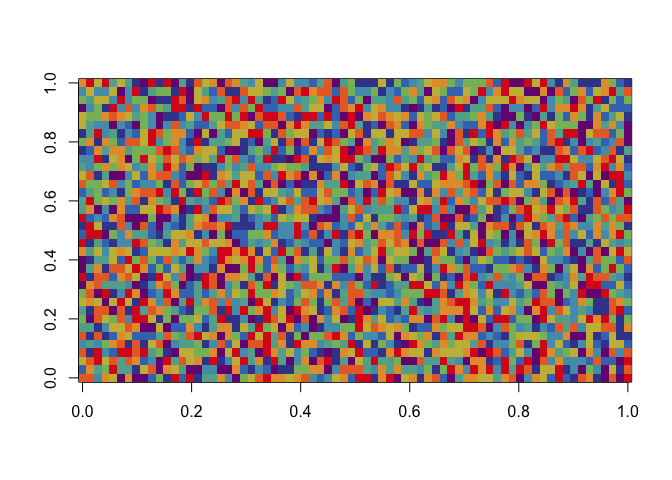
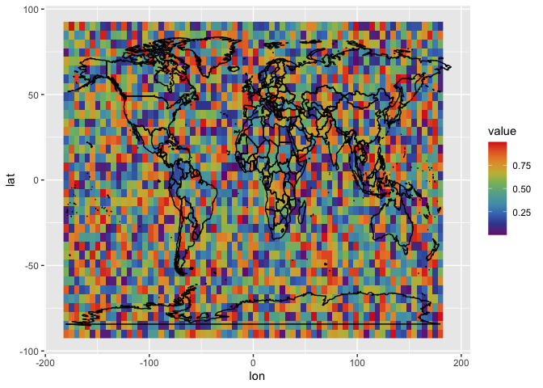
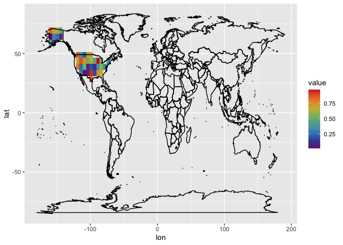

Regional Analysis Using R
This is an example to append geographic information to gridded data for regional analysis.
# *** use install.packages to get the packages for the first time ***
library(raster) # for handling raster object in R
library(tidyverse) # for ggplot2 and other data processing packages
library(reshape2) # for preparing data.frame object for ggplot2
library(pals) # for prettier color choices
Step 0: Making up some sample data matrix
lon = seq(-180, 180, length.out = 72)
lat = seq(-90, 90, length.out = 36)
X.matrix = matrix(data = runif(n = 72 * 36),
nrow = 72, # number of lon-element
ncol = 36) # number of lat-element
image(X.matrix, col = tol.rainbow(10))

# Convert that matrix into data frame
dimnames(X.matrix) = list(lon = lon, lat = lat) # we rename the 1st dimension of X as lon, 2nd as lat and assign the names row and col as values of lon.vector and lat.vector
# so that we can use one line to make it a data frame
X.df = melt(X.matrix)
# check the first 5 rows of the data
head(X.df, 5)
## lon lat value
## 1 -180.0000 -90 0.8672613
## 2 -174.9296 -90 0.8062684
## 3 -169.8592 -90 0.3092147
## 4 -164.7887 -90 0.7819696
## 5 -159.7183 -90 0.6498956
and optionally visualize the data frame
X.df %>% ggplot(aes(x = lon, y = lat)) +
geom_raster(aes(fill = value)) +
scale_fill_gradientn(colors = tol.rainbow(10)) +
borders(colour = "black")

Step 1: Downloading the “shape” of the US
USA.sp = raster::getData(name = 'GADM', # name of database
country ='USA', # country code of the US
level = 1, # border detail level 1 is state level, 2 is county, 3 is city
download = TRUE)
head(USA.sp)
## GID_0 NAME_0 GID_1 NAME_1 VARNAME_1 NL_NAME_1 TYPE_1 ENGTYPE_1 CC_1 HASC_1
## 1 USA United States USA.1_1 Alabama AL|Ala. <NA> State State <NA> US.AL
## 12 USA United States USA.2_1 Alaska AK|Alaska <NA> State State <NA> US.AK
## 23 USA United States USA.3_1 Arizona AZ|Ariz. <NA> State State <NA> US.AZ
## 34 USA United States USA.4_1 Arkansas AR|Ark. <NA> State State <NA> US.AR
## 45 USA United States USA.5_1 California CA|Calif. <NA> State State <NA> US.CA
## 48 USA United States USA.6_1 Colorado CO|Colo. <NA> State State <NA> US.CO
Step 2: Matching (lon, lat)-pairs with regional information
# this line isolate the distinct (lon, lat)-pairs for faster computation incase X is large
X.lonlat = X.df %>%
select(lon, lat) %>%
distinct()
X.lonlat$region = over(x = SpatialPoints(coords = X.lonlat, proj4string = CRS(proj4string(USA.sp))),
y = USA.sp)
# concat the regional information back to the data frame
X.df = X.df %>% left_join(X.lonlat)
## Joining, by = c("lon", "lat")
Step 3: Calculating e.g., regional average
X.df %>%
group_by(region$NAME_1) %>%
summarize(value = mean(value, na.rm = T))
## `summarise()` ungrouping output (override with `.groups` argument)
## # A tibble: 26 x 2
## `region$NAME_1` value
## <chr> <dbl>
## 1 Alaska 0.385
## 2 Arizona 0.291
## 3 Arkansas 0.173
## 4 Colorado 0.298
## 5 Georgia 0.656
## 6 Idaho 0.874
## 7 Illinois 0.337
## 8 Kansas 0.172
## 9 Kentucky 0.579
## 10 Michigan 0.506
## # … with 16 more rows
Or isolating only US data on your map.
X.df %>%
filter(region$GID_0 == "USA") %>%
ggplot(aes(x = lon, y = lat)) +
geom_raster(aes(fill = value)) +
scale_fill_gradientn(colors = tol.rainbow(10)) +
borders(colour = "black")

Ka Ming FUNG
Data Scientist
Data Scientist who’s interested in the interactions between food security, air pollution, environmental health, and climate change